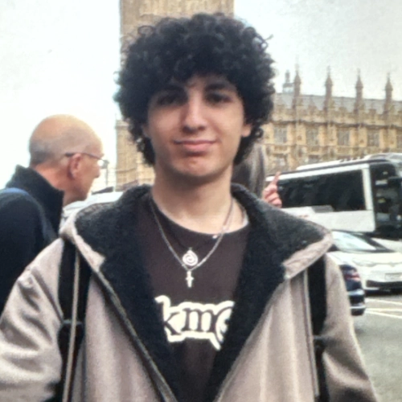
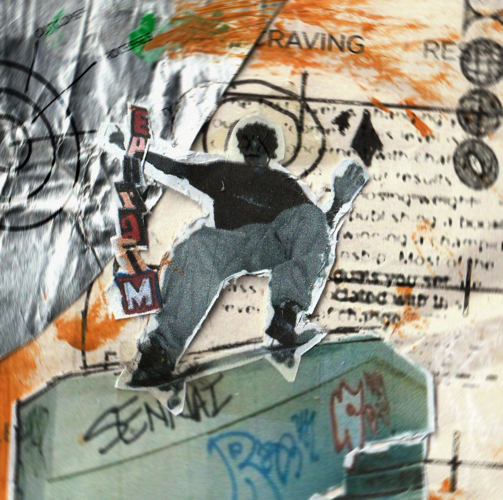
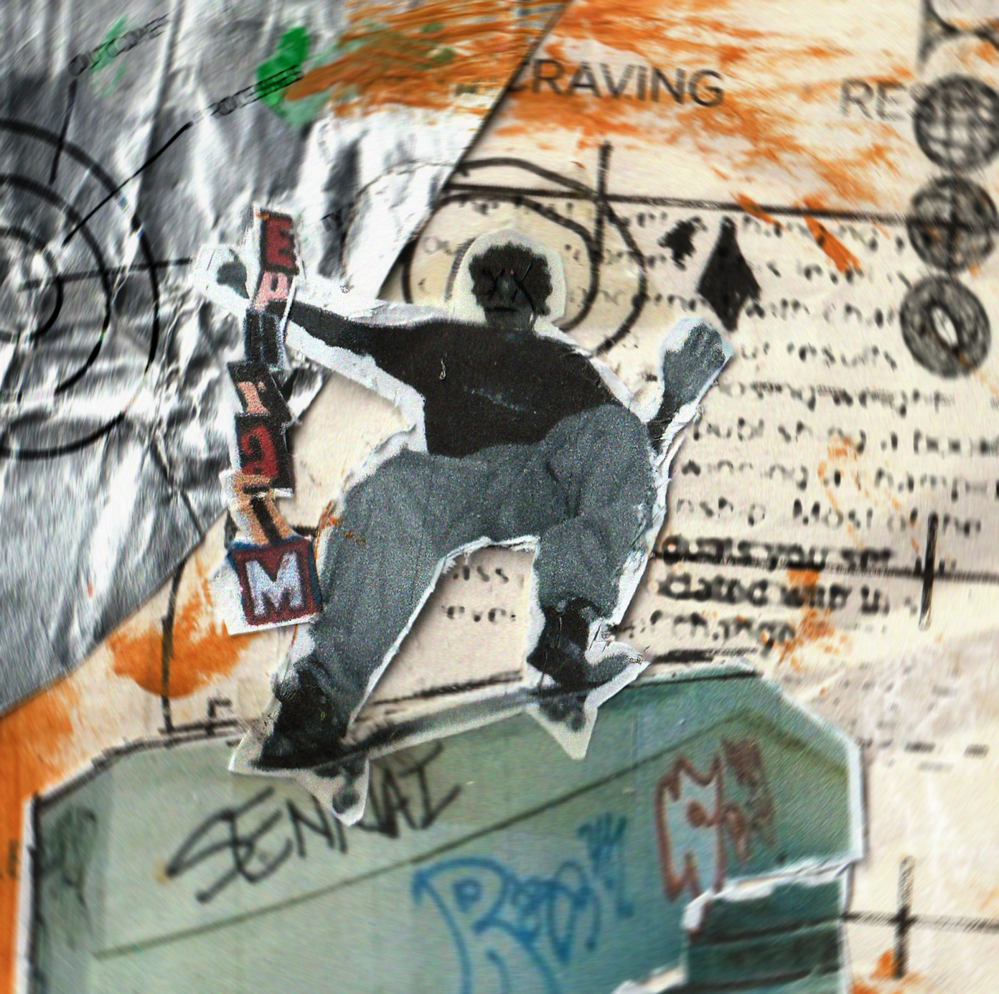

WASSIM DIFALLAH ⋆⭒˚.⋆

about me ૮ - ﻌ • ა
Hi! I'm Wassim. I am a British/Algerian VFX artist and graphic designer.
I make music videos, visualisers, cover arts, and short films. Also an amateur guitar player.
here u can find my full portfolio, along with some extra stuff like my social media :)
most recent work :>
hey please go check this out!


 
